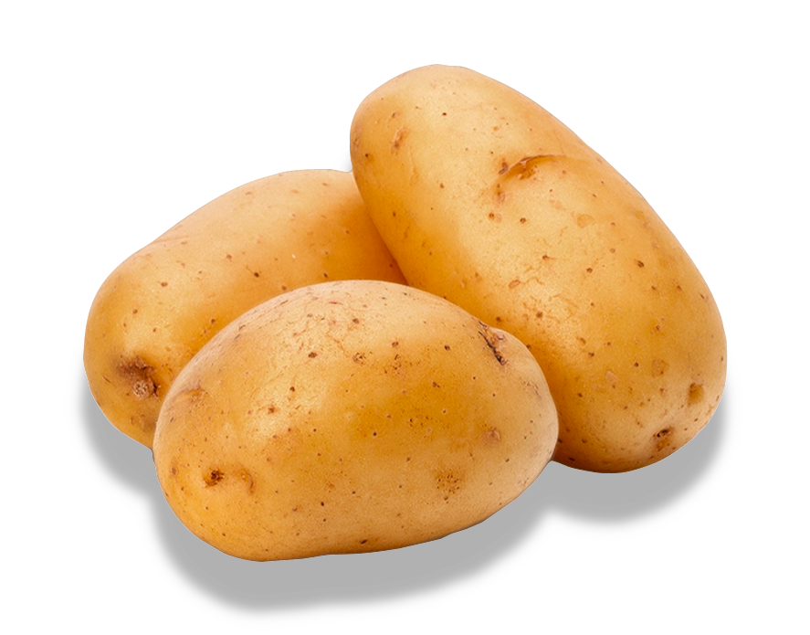
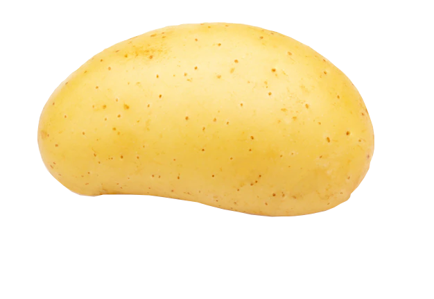
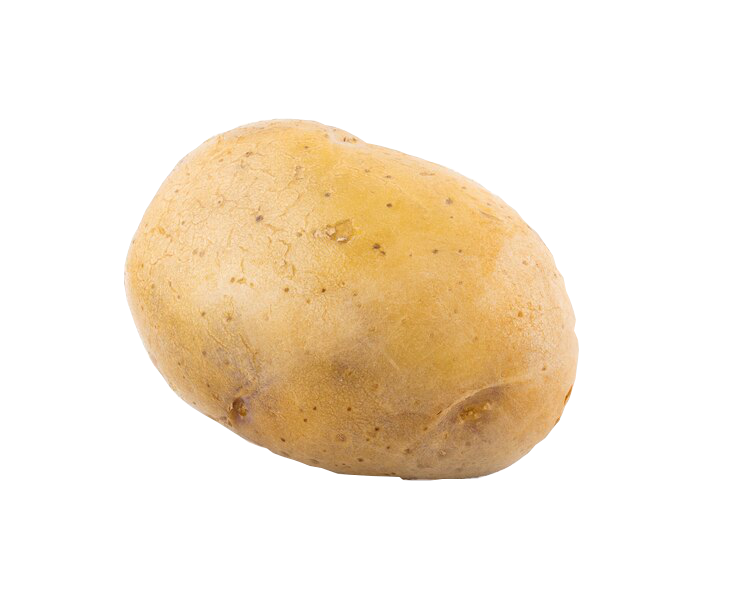
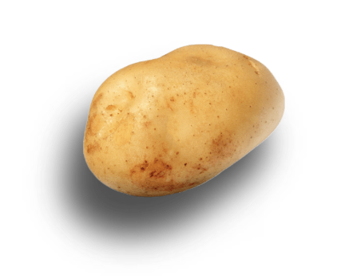
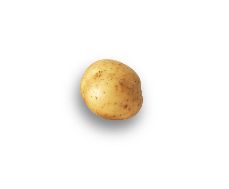

"Sweet, Nutritious and Delicious"
The key to happiness is hidden in the Potato™



Potato™ comes in many different unique shapes
and sizes.
Different shapes and sizes
Potato™ comes in many different unique shapes
and sizes.
Find the one that fits your personal preferences.

